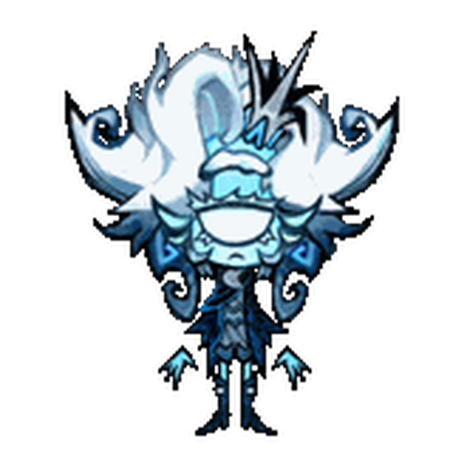

⚙️
Needs Input
💭
思考中
z
z
Z
🪐
💤


0 tok
·
$0.000 API-eq
📋
🗂️ 会话
✕
⇢
选择接管者。同代理保留完整历史，跨代理会生成一份本地交接单。
源会话不会被关闭；若它仍在工作，请留意并行修改。
旅行等级
新手旅宠
本机陪伴等级
刚刚开机
专属旅行信箱
授权和旅途会话会一直留在这里
🔒 独立只读旅行：不会改文件，也不会写进当前会话
🧳···🗺️
旅行明信片
💬
Codex 对话
会话:
Enter 发送 / Esc 关闭
🛠️ 小天体参数微调
✕
角色大小 (Scale)
0.368
水平中心 (X Offset)
100
垂直高度 (Y Offset)
205
气泡微调 (Bubble Y)
15
圆点微调 (Dots Y)
55
底部留白 (Bottom Pad)
16
普通音效音量 (Sound Vol)
0.10
受击音量 (Hit Vol)
0.20
✓ 配置已成功写入 custom_config.js
🗒️ 行动清单
✕
🔔 需要你处理
📋 待办